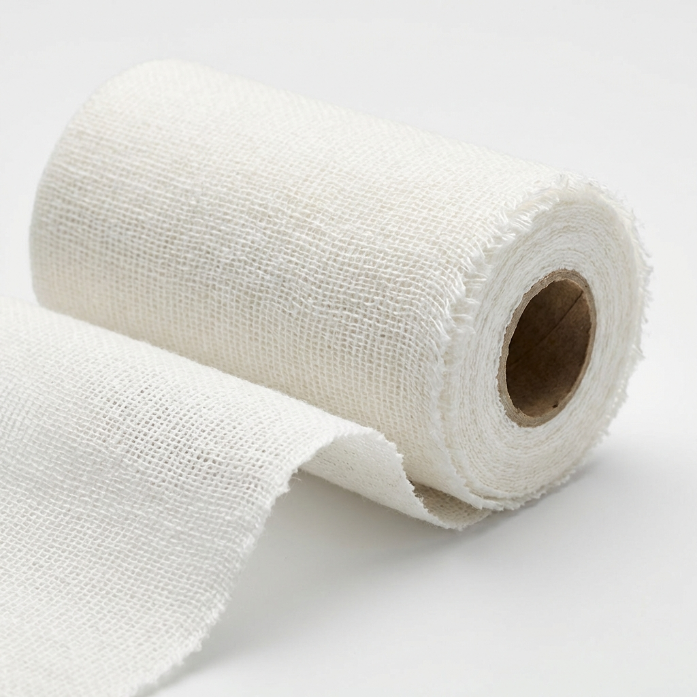
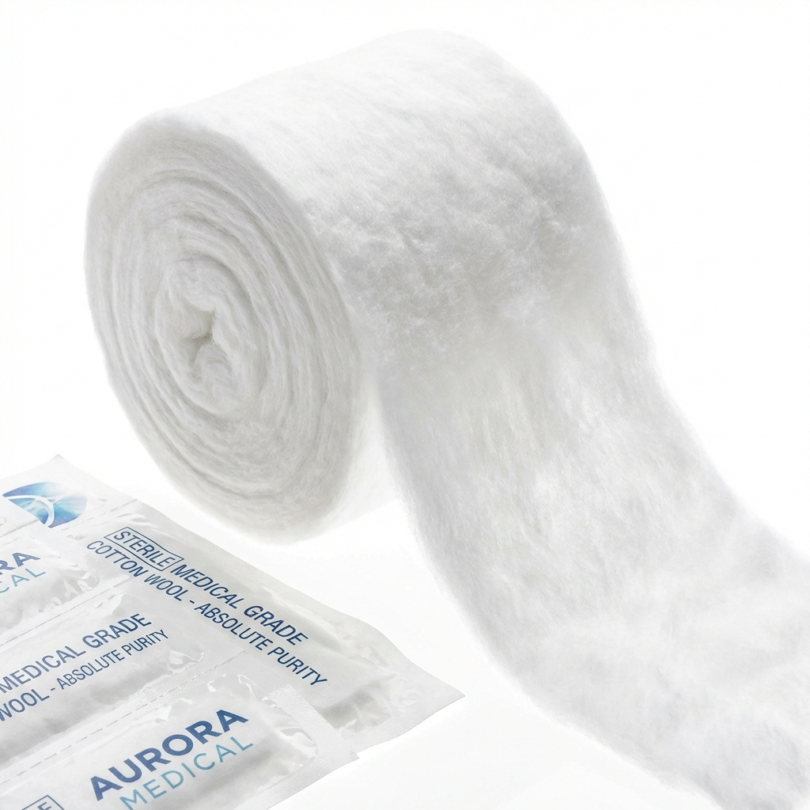
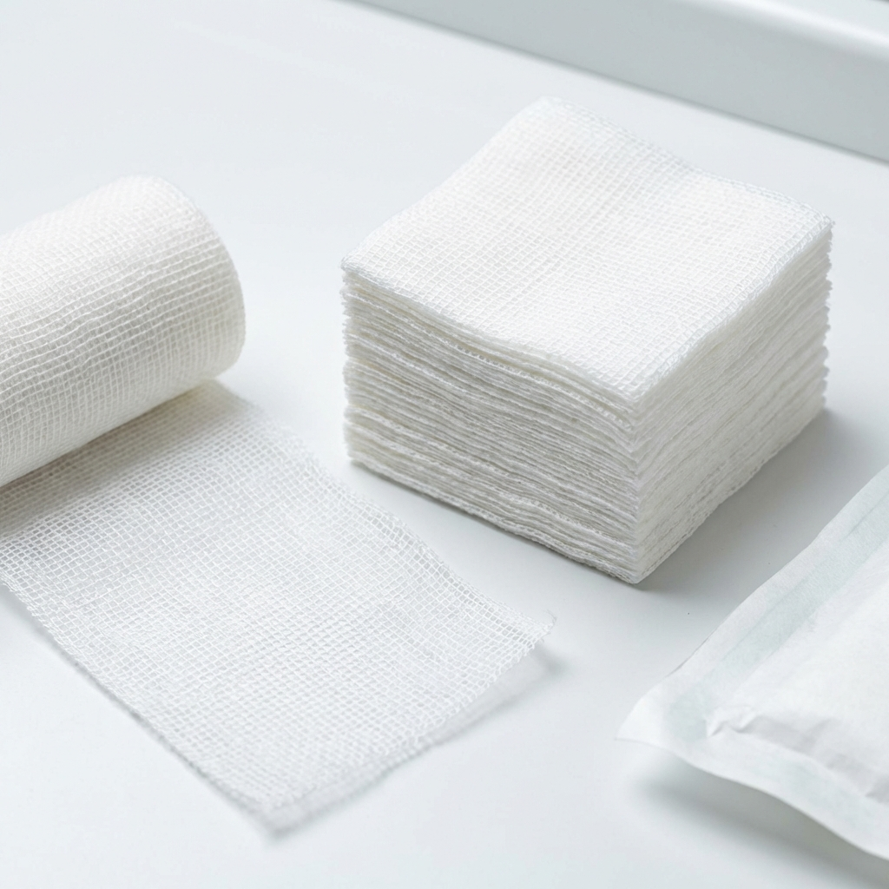
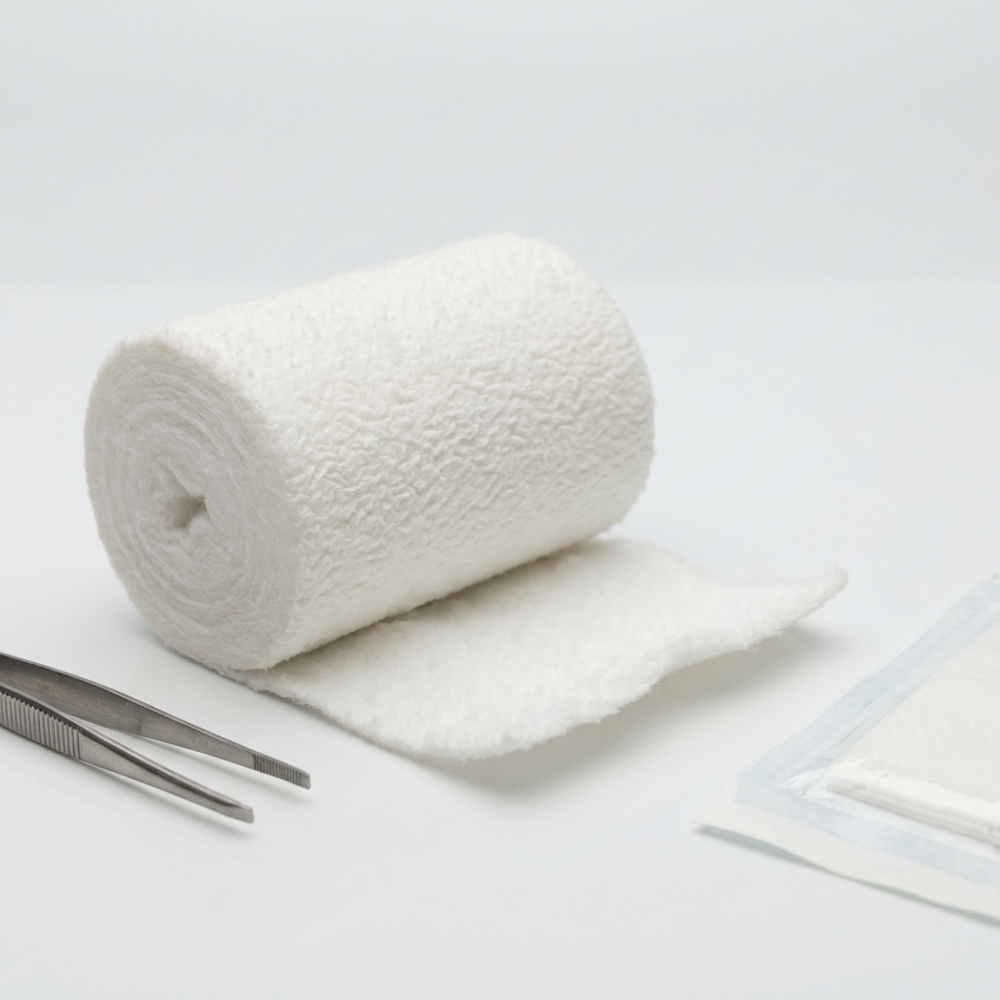

Setting the standard in sterility and comfort. Certified cotton bandages, gauze, and wool designed for professional healthcare facilities.
Precision-crafted cotton and gauze products designed for optimal wound care and surgical applications.

100% natural cotton, breathable and high absorbency. Ideal for securing dressings.
View Details
Highly absorbent, impurities-free. Perfect for wound cleaning and padding.
View Details

Soft flexible material, napped on one side. Ideal for sensitive wounds.
View DetailsMediTex manages the entire supply chain from raw cotton to finished sterile dressing. Our manufacturing processes are rigorously tested to meet European safety and quality directives.
Compliant with EU Medical Device Regulations, ensuring safety and performance.
Every batch undergoes strict bio-burden and sterility testing.